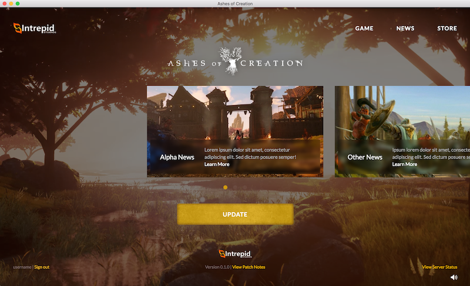
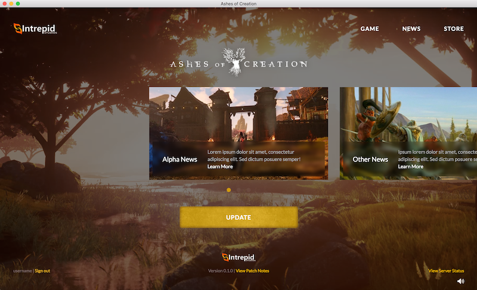

Heal; an app for patients to get care at home via doctor house calls or telemedicine.
Mobile
- Location-based feed makes it simple to find local primary care providers and appointments
- Intuitive booking experience with on-device caching lets patients seamlessly coordinate care
- Secure in-app patient file upload and Apple Health integration reduce pain points of onboarding
- Video telemedicine with CallKit integration supports HIPAA-compliant remote contact with providers
Other
- Medical staff scheduling dashboard to automate operational tasks
- Proxy service for providers to speak with patients on the phone while obfuscating private contact information
GigTown; a platform for local musicians to get discovered and booked by fans and venues.
Mobile


- Discovery of nearby musicians and checking into shows via location create hyperlocal experience
- In-app rating and tipping with Apple Pay lets fans support artists directly
Web


- Administrative calendar tool allows booking agents to individually manage large volumes of artists and venues
- Simple artist onboarding, profile management, and gig discovery leaves minimal barriers to acquiring talent on the platform
- Elegant public site template gives professional feel to all contractors offered by GigTown
Backend
- Architecture, data modeling and indexing for query optimization
- On-save state validation, job queues and webhooks
Northwestern University '15
- MS Computer Science
- Magna Cum Laude
Habitsourcing
- Research paper written and published with Katherine Lin and Dr. Haoqi Zhang at NU's Delta Lab
- Introduces alternative approach to collecting environmental data by harnessing habit-building practices of millions of people
- Presented at 2016 ACM User Interface Software and Technology Symposium (UIST) in Tokyo, Japan
Swift, Python
Modernistik
 

- Native Mac/Windows launcher skin for upcoming MMORPG